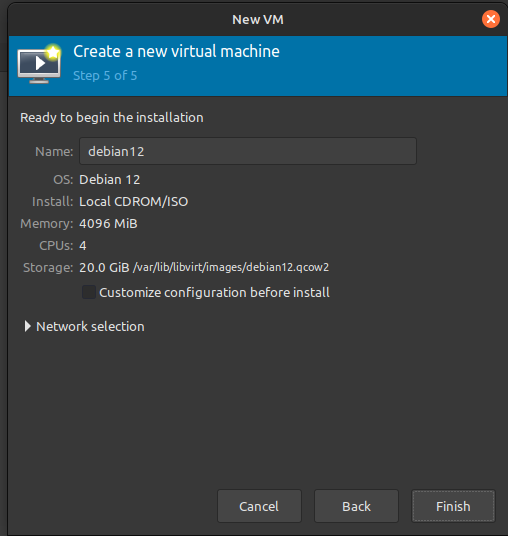

This site is a walkthrough of my process of creating a virtual Debian-12 machine, and exploring some of the features and tools that can be used with it. This was a learning process for me, and I hope that it can be helpful for others who are interested in learning about virtual machines and linux.
